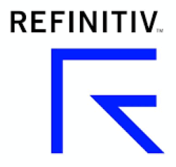

<section id="InvestorReturn">
    <div class="container">
        <h1>Benchmarks of Investor Success</h1>
        <div class="row">
            <div class="col-12">
                <p>The primary Kegonsa managed fund metric is investor return. The fund benchmarks against the venture capital indices provided by Cambridge Associates and Refinitiv.</p>
                <p>To learn more about these indices, please click on the logos below.</p>
            </div>
        </div>
        <div class="row">
            <div class="col-6 center">
                <a target="_blank" href="https://www.cambridgeassociates.com/private-investment-benchmarks/">
                    Cambridge Associates <br />
                    
                </a>
            </div>
            <div class="col-6 center">
                <a target="_blank" href="https://www.refinitiv.com/en/financial-data/indices/venture-capital-index">
                    Refinitiv <br />
                    
                </a>
            </div>
        </div>
    </div>
</section>